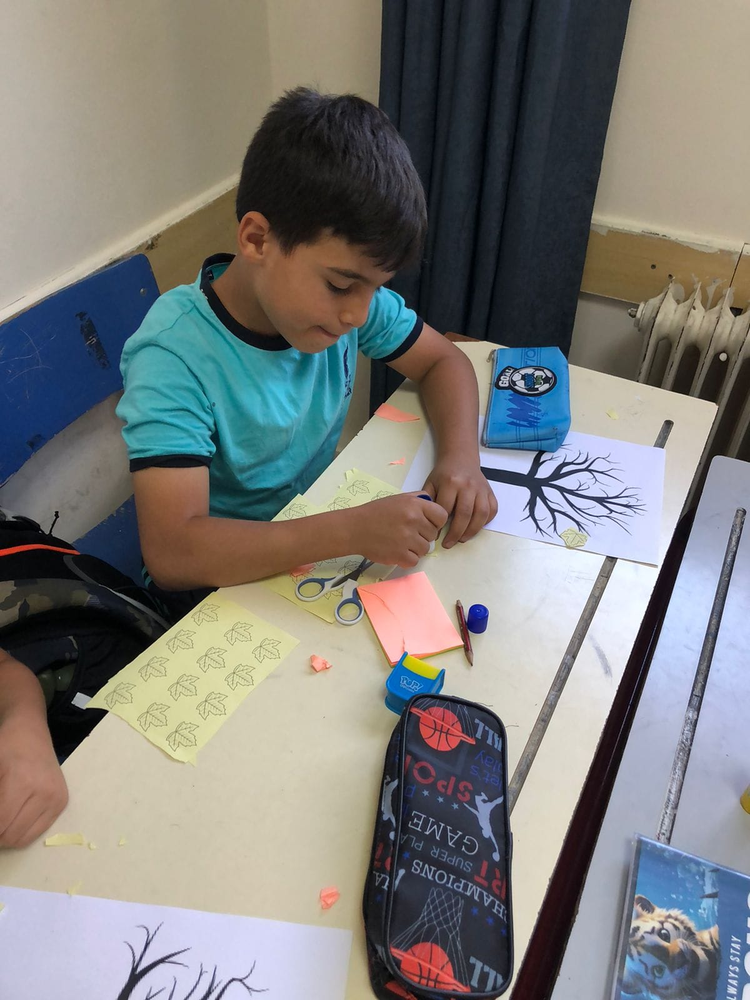
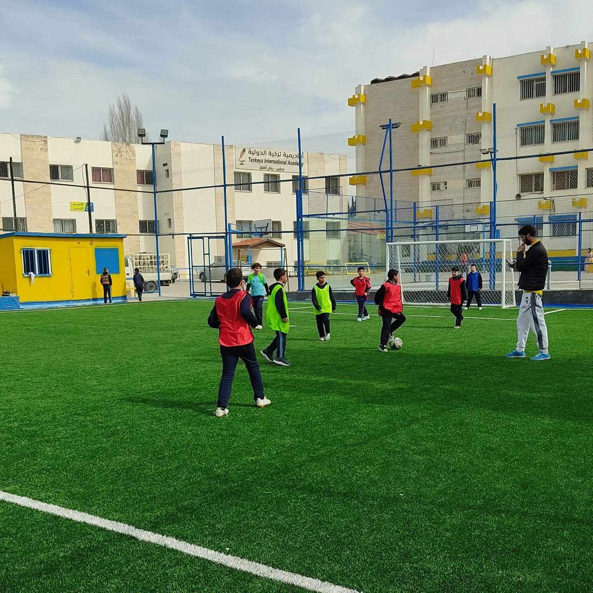
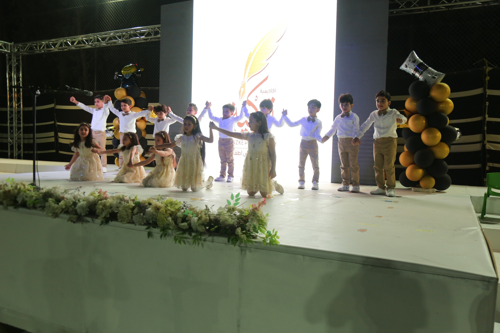
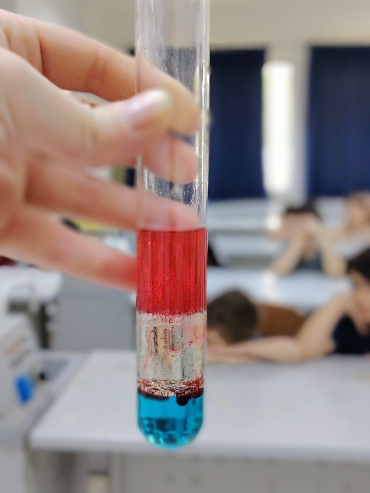
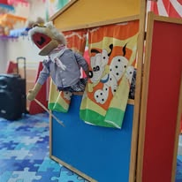

اكتشفوا عالم الأنشطة في أكاديمية تزكية!

الرسم والأشغال اليدوية
تنمية المهارات الإبداعية والفنية لدى أطفالنا الصغار من خلال الألوان الزاهية والمواد المختلفة في بيئة مدرسية محفزة وملهمة.

الألعاب الرياضية والمرح
تعزيز اللياقة البدنية والروح الرياضية في بيئة ممتعة وآمنة، مع ألعاب شيقة ومسابقات ودية تقام في ساحاتنا الواسعة.

الأنشطة الموسيقية والغنائية
اكتشاف المواهب الموسيقية وتنمية حس الإيقاع والتعبير الفني من خلال الغناء والآلات في قاعاتنا المجهزة.

ورش العلوم والاكتشاف
تجارب علمية بسيطة وممتعة تشجع على الفضول، الملاحظة، واكتشاف العالم من حولنا في مختبرنا المجهز.

نادي القصص والحكايات
عالم من الخيال والمغامرات من خلال قراءة القصص، تمثيل الأدوار، وتأليف الحكايات الجديدة.

الحاسوب والابتكار
تعلم أساسيات التعامل مع الحاسوب بطريقة مسلية، وبرمجة الألعاب البسيطة للأطفال.